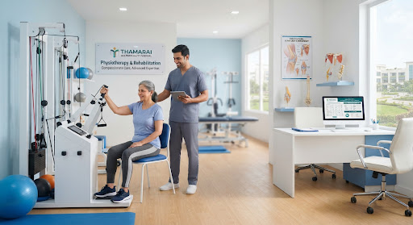
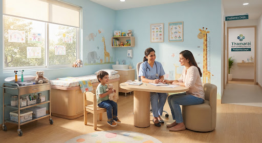
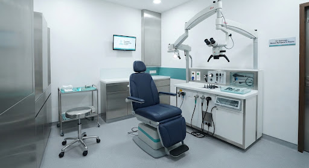
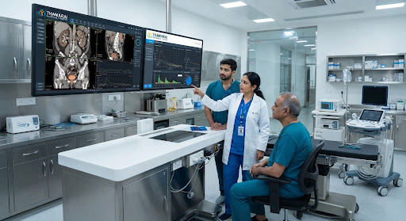
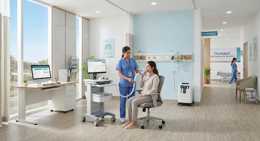

Our Departments
Comprehensive care across a wide range of medical specialities.
search

ecg_heart
Cardiology
Expert heart care, advanced diagnostics, and surgical interventions.
Know More arrow_forward
format_h4
Orthopaedics
Comprehensive care for bone, joint, and muscle conditions.
Know More arrow_forward
neurology
Neurology
Specialized diagnosis and treatment of nervous system disorders.
Know More arrow_forward
stethoscope
General Medicine
Primary care and management of comprehensive adult illnesses.
Know More arrow_forward
child_care
Pediatrics
Compassionate medical care for infants, children, and adolescents.
Know More arrow_forward
hearing
ENT
Diagnosis and treatment of ear, nose, and throat disorders.
Know More arrow_forward

pregnant_woman
Gynecology
Comprehensive women's health, maternity, and reproductive care.
Know More arrow_forward
water_drop
Urology
Expert treatment for urinary tract and male reproductive systems.
Know More arrow_forward
air
Pulmonology
Specialized care for lungs and respiratory tract diseases.
Know More arrow_forward
No results found. Try adjusting your search or filters.